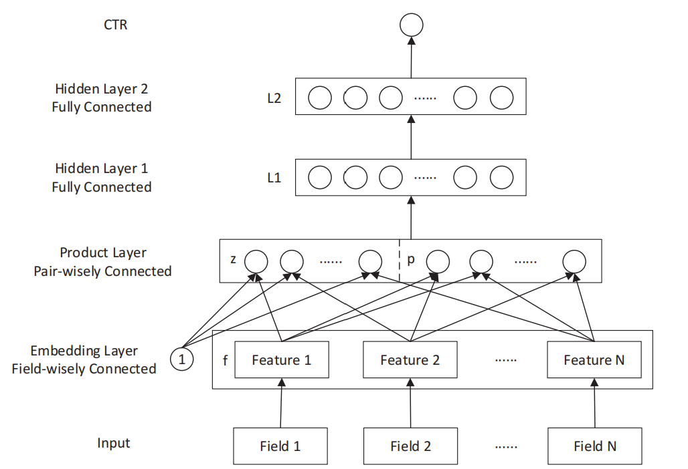
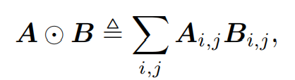
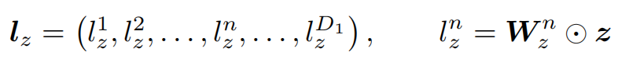
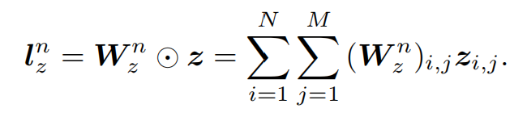
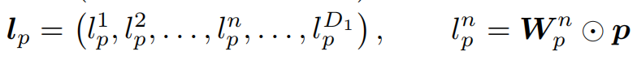
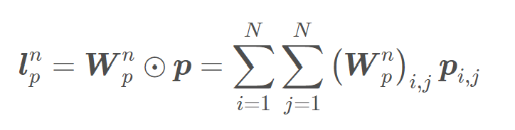

经典推荐模型:PNN
之前介绍的NeuralCF使用神经网络代替了协同过滤中的点积操作，并取得了一定的进步。但是，它只使用了用户-物品的共现矩阵进行建模，而忽略了其它特征，比如用户的性别、年龄等。
本文将要介绍PNN在模型中加入了更多的特征，并设计了更为精细的特征交叉方式。
PNN简介
PNN，全称是Product-based Neural Networks，这里的Product特指PNN中的Product层。如果将Product层所做操作替换成简单的拼接(concat)，那么就变成了我们之前介绍的Deep Crossing。因此，PNN最大的创新就在于Product层。
PNN总体结构
PNN的结构如下图所示：

从下往上看。
Input Layer：
Input层的输入是一些类别特征，它们一般是One-Hot编码的形式，比如第一个特征域Field1表示性别，如果当前输入样本性别为男，则Field1对应特征的值是”10”，若是女则为”01”，其余特征域同理。
举个栗子，假设共2个类别变量，分别为’性别，星期几’，那么对于如下样本：
1 | 男，星期2 |
输入网络的数字为：
1 | 100100000 |
最开始的10表示男，后面的0100000表示星期2。
Embedding Layer：
每个特征域所含元素数量可能不同，比如性别只有男女，因此对应的维度是2，而代表星期几的特征域中的特征对应的维度则是7。对于每个特征域对应的特征，独立进行Embedding，就能够将不同维度的One-hot编码转换为维度一致的Embedding编码了，也就是图中的Feature 1, Feature 2, …, Feature N。
Product Layer：
将Embedding后的向量输入到Product层，Product层会做两件事。
其一，线性操作，生成左侧的$l_z$向量；
其二，乘积操作，生成右侧的$l_p$向量。
具体如何做，稍后将详细解释。
Hidden Layer1/2：
将生成的$l_z$, $l_p$拼接在一起，输入到全连接层，最终得到预测结果。
详解Product Layer
在此之前，先来定义张量之间的内积操作。
两个向量求内积，就是将两个向量对应位置元素相乘，然后把乘出来的结果统统加起来，得到一个数。
张量内积同理，也是对应位置元素先相乘，最后再把所有乘积统统相加：

线性操作
现在来看Product Layer的左半部分：**由Embedding向量生成$l_z$ **：

$l_z$是一个长度为$D_1$的向量，其中$D_1$是Hidden Layer1的维度，因为稍后会将Producet层的结果输入到Hidden Layer1。
$l_z$中的第$n$个元素$l_z^n$是一个数，它是$z$与$W_z^n$的内积。
其中，$z$是N*M的，$N$是总的特征域个数，$M$是Embedding后得到的向量的维度。这里假设每一个Embedding后的向量都与1进行交互，结果不变。或者换个角度理解，$z$就是Embedding层输出的N*M的矩阵。
$W_z^n$是相应权重，维度和$z$一致，也是N*M。
$W_z^n$与$z$求内积，就得到了$l_z^n$：

同理可计算得到$l_z^1,…,l_z^{D_1}$。
乘积操作
接下来介绍Product Later的右半部分：**由Embedding向量生成$l_p$ **：


$l_p$和上面的求解公式是一样的(都是张量内积操作)，各个维度的含义也相同，$W_p^n$的维度也和$p$相同，不同之处在于$p$。
具体地，$p$是由Embedding后的特征两两交互得到的，按照特征交互方式的不同，可以有两种方式得到$p$。
第一种，特征之间求内积，此时的PNN也被称为IPNN(Inner Product-based Neural Network)。
此时，$p_{i,j}$是由Embedding后的第i个特征和第j个特征之间求内积得到的，因此是一个数。由于总共有N个特征域，因此Embediding后到N个特征，每个特征的维度是M，可以将其表示为一个N*M的矩阵，该矩阵的每一行都是一个长度为M的特征，该矩阵与自身的转置进行矩阵乘法，便得到了两两特征之间的内积组成的N*N的矩阵，这就是$p$。
由于$W_p^n$是相应的参数，因此其维度也是N*N的，两者之间求内积，便得到了$l_p^n$，同理可求得$l_p^1,…,l_p^{D_1}$。
第二种，特征之间求外积，此时的PNN也被称为OPNN(Outer Product-based Neural Network)。
上面介绍的$p_{i,j}$是一个数，它是由Embedding后的第i个特征和第j个特征之间求内积得到的。
而这里的$p_{i,j}$则是一个M*M的矩阵，它是由Embedding后的第i个特征和第j个特征之间求外积得到的。
所以，这里的$p$的维度是N*N*(M*M)，相应的权重$W_p^n$也是N*N*(M*M)的。
两者之间求内积，就得到了$l_p^n$，同理可求得$l_p^1,…,l_p^{D_1}$。
以上就是关于PNN的介绍。
最后补充一点，那就是在上面的PNN中，输入的都是类别变量，那数值型变量呢？
其实，数值型变量不需要以上的操作(数值型特征是连续的，不需要One-hot编码，更何谈Embedding)，一种处理方法是直接将其拼接在经过Product Layer的输出结果后面，一起输入到Hidden Layer1。
参考：
- [1] https://arxiv.org/pdf/1611.00144.pdf
- [2] https://blog.csdn.net/wuzhongqiang/article/details/108985457
- [3] 王喆-《深度学习推荐系统》